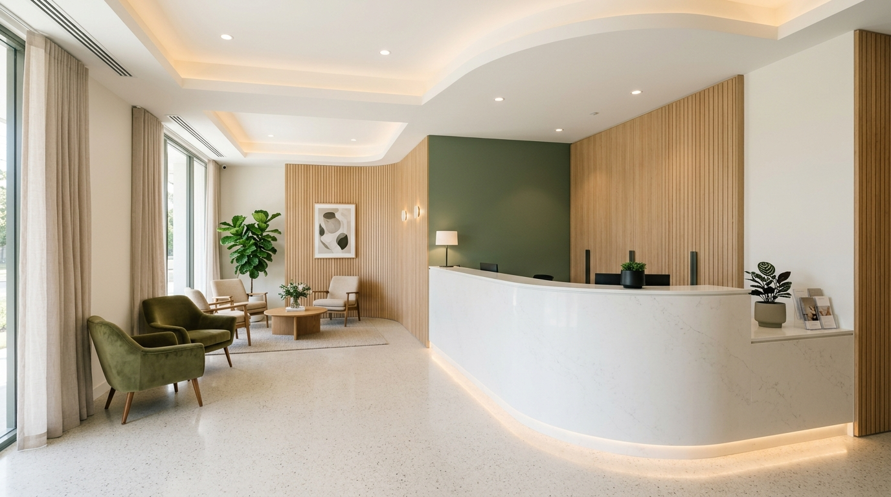
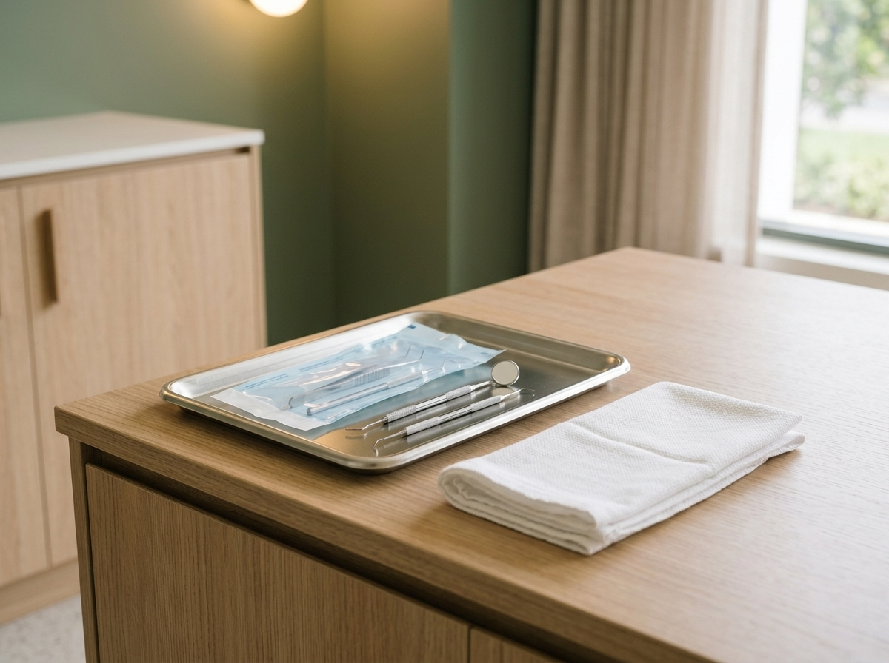
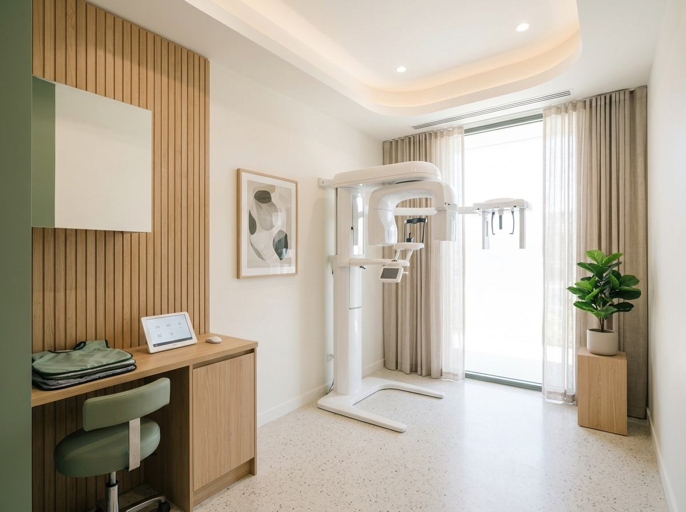

Dra. Camila Rocha
Clínica Geral e Estética
CRO-SP 104.821
Dedica-se ao diagnóstico abrangente, restaurações funcionais e acompanhamento preventivo regular de pacientes adultos.

Pinheiros, São Paulo · Rua dos Pinheiros, 789
Seis especialidades no mesmo endereço, em Pinheiros, com diagnóstico claro e atendimento no seu ritmo.
Ver especialidadesSobre a Clínica
Reservamos tempo de verdade para ouvir o que trouxe você aqui antes de qualquer exame.
Mostramos cada radiografia e opção de tratamento em linguagem direta, para que você decida com calma e combine pausas sempre que precisar.
Explicações detalhadas com apoio visual antes de iniciar qualquer etapa clínica.
Esterilização em autoclave com rastreamento de ciclos e testes biológicos frequentes.
Especialistas alinhados no mesmo espaço para planos contínuos sem deslocamentos.
Salas silenciosas, climatizadas e cadeiras projetadas para relaxamento postural.
Atendimento Humanizado · Conduta Clínica
“Sem tratamentos invasivos desnecessários. Valorizamos a preservação biológica da estrutura dental natural e a odontologia preventiva.”
Anestesia tópica prévia, comunicação transparente a cada etapa e respeito ao ritmo de adultos e crianças.
Especialidades
Toque em qualquer card para ler a descrição completa e agendar sua avaliação.
Corpo Clínico
Formação contínua e diálogo aberto em cada consulta para conduzir seu plano sem pressa.
Clínica Geral e Estética
CRO-SP 104.821
Dedica-se ao diagnóstico abrangente, restaurações funcionais e acompanhamento preventivo regular de pacientes adultos.
Ortodontia e Oclusão
CRO-SP 112.943
Especialista em mecânica ortodôntica digital, alinhadores transparentes e tratamentos interceptivos para adolescentes.
Odontopediatria
CRO-SP 98.650
Especializada no manejo comportamental infantil, orientação materno-infantil e prevenção de cáries em primeira infância.
Implantodontia e Prótese
CRO-SP 119.302
Foco em reabilitação oral funcional, implantes osteointegráveis e planejamento guiado de coroas unitárias e múltiplas.
Convênios e Atendimento
Consulte nossa recepção para confirmar a abrangência do seu plano.
Como Funciona
Do contato inicial ao acompanhamento, você sabe sempre o que vem a seguir.
Escolha o dia e horário mais conveniente diretamente pelo WhatsApp com retorno rápido da recepção.
Consulta com anamnese clínica, exame bucal completo e registro fotográfico ou radiográfico quando indicado.
Apresentação clara das opções de tratamento, prazos estimados e esclarecimento de todas as dúvidas.
Execução cuidadosa, orientações pós-atendimento e suporte contínuo para manutenção da saúde bucal.
Nossa Estrutura
Salas higienizadas, silenciosas e equipadas para acolher com pontualidade e tranquilidade.





Cadeiras ergonômicas, monitores para visualização de exames e recursos que priorizam o silêncio e o relaxamento do paciente.
Perguntas Frequentes
Respostas diretas sobre avaliação, conforto e rotina clínica.
Conversar com a recepçãoA primeira consulta é dedicada a conhecer seu histórico de saúde geral e bucal, entender eventuais desconfortos e realizar um exame minucioso dos dentes, gengiva e tecidos orais. Havendo necessidade de exames complementares (como radiografias), orientamos o encaminhamento antes de definir o plano final.
Sim. Durante nossos horários de funcionamento (segunda a sexta das 8h às 19h e sábados das 8h às 13h), reservamos encaixes operacionais para situações de dor aguda, fraturas dentárias acidentais ou perda de restaurações. Entre em contato prévio pelo WhatsApp para que a equipe prepare o consultório.
Priorizamos o controle cuidadoso da sensibilidade por meio de anestésicos tópicos prévios, agulhas ultrafinas e técnicas anestésicas locais modernas e individualizadas. O profissional ajusta o ritmo do atendimento sempre que o paciente solicitar uma pausa.
Como regra geral na odontologia preventiva, recomenda-se a revisão clínica com profilaxia a cada 6 meses. No entanto, pacientes em tratamento ortodôntico, usuários de implantes ou com histórico de doença periodontal podem necessitar de intervalos trimestrais conforme orientação do dentista.
Nossa equipe de odontopediatria utiliza técnicas de condicionamento lúdico que respeitam o tempo da criança, explicando os instrumentos de maneira leve e amigável. Os pais podem acompanhar todo o atendimento dentro do consultório.
Localização e Contato
Estacionamento conveniado ao lado do edifício e fácil acesso pela Rua dos Pinheiros.
Rua dos Pinheiros, 789, 3º andar
Pinheiros, São Paulo · CEP 05422-001
Estacionamento conveniado ao lado do edifício.